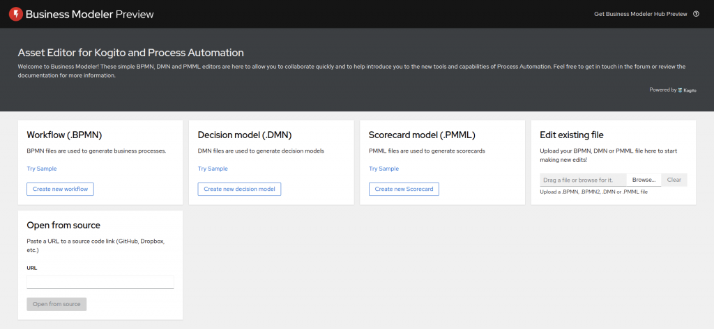

The Score card editor goes online
Following the announcement, that our Score Card editor is available in VSCode, it can now be tried online.

There is no better time to give it a look and provide feedback to drive its road map.
Archived from https://blog.kie.org/2021/04/the-score-card-editor-goes-online.html on 2026-04-01. Original content © respective authors, licensed CC BY 3.0.
Following the announcement, that our Score Card editor is available in VSCode, it can now be tried online.

There is no better time to give it a look and provide feedback to drive its road map.